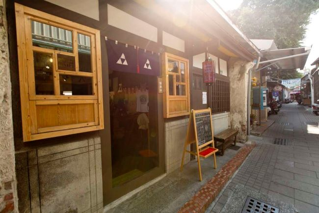

景點介紹
安平老街有著台灣第一街稱號的安平老街，是300多年前荷蘭人在安平建立的第一條街道，早期街道的設計都僅供人與推車通行，因此街廓並不是很寬。許多遊客來到安平也都必然進到這條古老的街道，擁擠熱鬧的人潮是安平老街的常態，似乎不這樣也不像安平老街，街上各式老店林立，不管是國內外遊客總在老街上穿梭尋寶，偶而抬頭看看街道上的老屋還能發現幾尊安座在屋頂的風獅爺，或是在門楣上的劍獅，也是走逛安平老街的樂趣。老街上還有許多條穿梭安平各處的小徑，每穿過一條小徑都有不同的風景，有茉莉巷，有胭脂巷等等，區域內也保留許多老式聚落，走在靜謐的巷弄裡面有如時光倒流一般，錯綜複雜的小巷也頗有探險的感覺，來到安平老街如果沒有走進巷弄的話就真的太可惜了。
